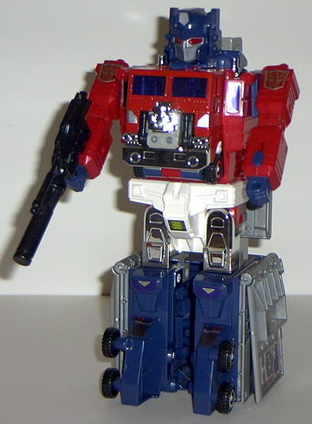
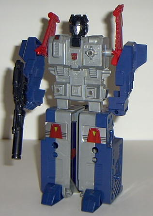
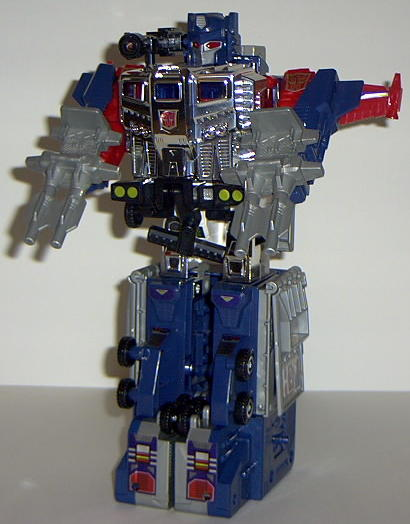

Before I start, something
worthy of note: this toy is not actually the same as the original Powermaster
Optimus Prime released in the U.S. in the 1980's- it's actually "God Ginrai",
which is essentially the same toy but with an extra trailer section at
the end called "Godbomber". "Godbomber" can combine with Powermaster Prime's
super robot mode to create an...um... even-more-super robot mode.
Vehicle mode is a truck
with a really looong trailer. In fact, if it were any longer it'd be a
pain to move around without bumping it into anything. It's huge. Plus,
it's armed to the teeth- five- count 'em- FIVE gun emplacements are on
this guy, ready to go kickin' some butt. Another positive is that this
version of Prime stays together a bit better in vehicle mode than the original
Optimus Prime
. (And it'd better, considering
how much weight this thing has to pull...) The diecast metal bit is the
front half of the cab.
The normal robot mode
can only be achieved by plugging Hi-Q (aka "Ginrai") into the front of
the cab, which allows you to swing down the legs to "open up" the cab.
(Hi-Q, by the way, is the little engine guy shown above- he's Optimus Prime's
"Powermaster"- a gimmick in which you had to plug in the Powermasters,
transformed into engine mode, to transform the larger TF. Hi-Q's kinda
boring, himself- he can swing his legs side to side and his arms back and
forth. That's it.) Prime's normal robot mode is like the original 1984,
only a bit cruddier. Mo more individual leg articulation for him- his legs
are now molded together at the bottom. His chest actually just has a bunch
of stickers applied on to make it look like his old chest- only it doesn't
work nearly as well when it's just stickers. It looks gaudy. His robot
mode chest actually isn't the cab front in vehicle mode, but is just for
show to identify him with the original optimus Prime. Additionally, his
head's just molded on a square block, and his arms are skinny. Meh.
The base mode isn't
much, but it's certainly better than the older Prime's "fold out trailer"
base mode. This one has some roadways leading up to it, a "base room" inside
the tower, and some gun emplacements that you can fit Hi-Q in. The super
robot mode arms on the side of the tower look rather goofy, though, considering
that they're so obviously arms.



Powermaster Prime's
"super robot mode"- in which you combine the cab and the first following
trailer- is okay. Just.. okay. The arms are a little puny, but I do like
the style of the metallic cab-engine chest and the head. (The head is just
a separate piece that isn't storable in any other mode, though.) His legs
are really wide and blocky, though, and they can only move sideways. Considering
that his only other points of movement are in his shoulders, this makes
Prime essentially a big brick with a head. Um... whee?
Godbomber's robot mode
is a piece of crud, and probably my least favorite form of this toy. (Godbomber
is made up of the last trailer section, remember.) His "transformation"
involves just taking the trailer apart and reassembling it in a different
arrangement, which is really cheap. Not to mention that Godbomber falls
apart if you so much as look at him the wrong way. He also has no leg movement
at all- only his arms at the shoulders can move (and usually fall off when
you move them anyway). His arms aren't even solid- they're just outer shells
of arms, like only one half of an arm matters.
When you combine Powermaster
Prime's "super robot mode" with Godbomber's pieces (called "Apex Armor"
for this release), you get a final combined, really-really-big robot mode.
Unfortunately, it's little more than the super robot mode, but with a new
chest plate and bigger arms and feet. And the chest plate and backpack
pieces don't stay on very well, anyways. No new points of articulation,
no new gimmicks, no nothing. A rather pointless combination, if I do say
so myself.
Powermaster Optimus
Prime has a lot going for him- FOUR different robot modes, a really big
vehicle mode, and a little Powermaster guy. He also has quite the weaponry,
and considering his size, $50 isn't that bad of a price for him. Too bad
he's essentially just a big brick with odd proportions, or he might have
been a really fun toy.
Apex Bomber Bio
:
FUNCTION: Autobot Armored Warrior
Unites with Optimus Prime to form to
create Powermaster Optimus Prime Apex Armor. The enhanced armor provides
superior weapon blast deflection in battle. When not united with the Autobot
commander, he acts as a non-cognitive drone that responds to the orders
of Optimus Prime. Can be commanded by Optimus Prime to perform combat functions.
Armed with a super rifle and particle beam cannon.
Strength: 9.0
Intelligence: 2.0
Speed: 8.0
Endurance: 8.0
Rank: 2.0
Courage: 6.0
Firepower: 10.0
Skill: 7.0
Review by Beastbot